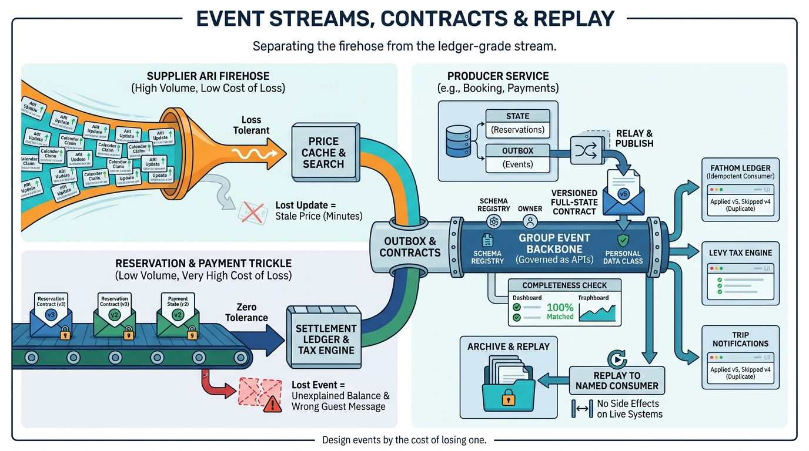

Part VIII — PLATFORM: The Distributed System Underneath
Streams of Nights: Event-Driven Architecture for Stays

Image generated by Google Gemini (gemini-3-pro-image-preview)
Part VIII — PLATFORM: The Distributed System Underneath

Image generated by Google Gemini (gemini-3-pro-image-preview)